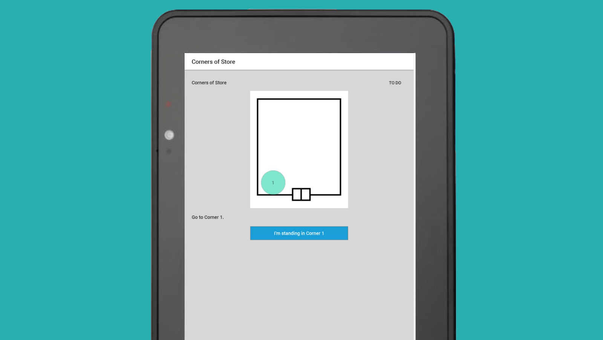

Crowd-sourced Wi-Fi reporting
Project
In an effort to modernize day-to-day activities in the stores, business gave them handheld and tablet devices. The new devices required nearly constant Wi-Fi connection. We heard constant complaints about the connectivity and speed. Store employees specifically called out being embarrassed to use the devices in front of customers because of how slow they were.
The team responsible for in-store internet had no time or money to invest in new internet hardware. When discussing their issue, we realized we may be able to help them collect data to plead their case. I designed a tool that would allow store employees to report Wi-Fi strength for different parts of the store.
- My role: Lead UX designer
- Team: Product owner, UI designer, researcher
Objective
- Create a tool that allows store employees to record Wi-Fi strength at different locations within the store
- Collect and send that information to the internet team so they have data to argue for a budget to improve Wi-Fi in stores
Work
We found several limitations from the beginning:
- Every store had a different floor plans
- There were no maps of each store
Compounding all these problems was a lack of accountability. These devices were communal and did not require a login to access. Store employees did not feel responsible for these devices and there was no way to make them responsible for the devices.

But because departments could be in wildly different locations depending on the building, I wanted to try and measure some kind of geographical-based signals. Without a floor plan, though, I decided that maybe we could draw some kind of rudimentary map to represent the store and doors. I had no idea how that was going to go during research. The map looked like a square faced with buck teeth.

We brought paper printouts to stores to research. The managers were thrilled. This would give them an opportunity to provide feedback to improve their stores. Even though we were asking them to add yet another task to their overloaded days, they described how they would add the Wi-Fi tracker to their daily walks. They understood the rudimentary map. The only request was to provide a handheld version, because they preferred the handheld device to the tablet.

End result
Unfortunately, business rejected the app proposal. They were concerned about the labor hours we were asking managers to perform for us.
Reflection
This project was something we were very passionate about, something the managers were passionate about, and something that the internet team was passionate about. We failed to pass on that excitement to business.
Going forward, we carefully teed up every product we would present to business. We made sure to tighten our presentation style, address the needs of every individual executive, and make sure we had an iron-clad reasoning for each and every decision. It wouldn't necessarily guarantee us success at all times in the future, but we had a much better average.
The project wasn't a complete loss, though. Parts of it were later cannibalized when business asked for an update to the troubleshooting tool to measure Wi-Fi connectivity when stores reported an issue.